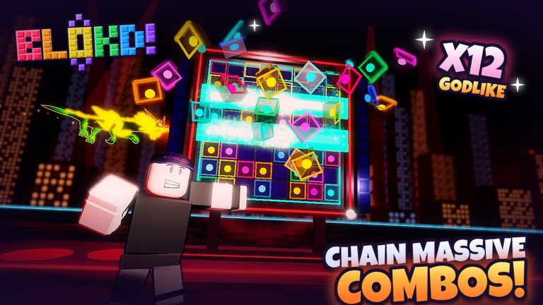

Save 01 / 07Cover story · Live nowp. 03
Blokd!
Drag, drop, clear. A puzzle game you play on feel.

What it is
You drag block pieces onto an 8×8 board. Fill a whole row or column and it clears. Clear several in a row and you build a combo, and combos are where the big scores are.
Why I made it
I wanted a puzzle game you play on feel. Quick eyes, quick hands, and that “in the zone” rhythm, instead of sitting there thinking for ages.
Free code RebornWithRelease — redeem it in the shop for the Night City theme.
Inside
- Solo beat your own best score
- Co-op up to 4 friends share one board and take turns
- Duels 1v1, and your clears send junk blocks to your rival
- Chaos Mode & events frozen blocks, lava, conveyor belts, even bosses
- Style 20 themed worlds, 30+ block skins, 60+ emotes
- Progress daily quests, a season pass, a prestige shop and leaderboards